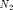
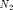

Ammonia Synthesis Reactor
This script demonstrates a degree of freedom analysis and solution of material balances for a simple model of an ammonia synthesis reactor. The problem is quoted from Example 2.8, page 108, of Murphy (2005).
Contents
Required Functions
- CVX
- displaytable.m
Problem Statement (Murphy, Example 2.8, page 108)
"A gas mixture of hydrogen and nitrogen is fed to a reactor, where they react to form ammonia,  . The  flowrate into the reactor is 150 gmol/h and the hydrogen is fed at a ratio of 4 gmol
. The  flowrate into the reactor is 150 gmol/h and the hydrogen is fed at a ratio of 4 gmol  per gmol . The balanced chemical reaction is
per gmol . The balanced chemical reaction is

Of the nitrogen fed to the reactor, 30% leaves in the reactor outlet stream; the rest is consumed by reaction. The reactor operates at steady state. Determine the DOF."
Flow Diagram
______________
H1 | | H2
---->| 3H + N -> 2A |---> N2
N1 |______________| A2CVX Model
The CVX modell demonstrate identifies 6 variables, and 6 equations. Therefore there are 0 degrees of freedom.
cvx_begin quiet % Stream Variables (5) variables H1 N1 % Stream 1 variables H2 N2 A2 % Stream 2 % System Variables (1) variables X % Extent of reaction % Stream Specifications (3) N1 == 150; % Inlet flow of N2, gmol/h H1 == 4*N1; % 4:1 molar ratio of H2 to N2 N2 == (1-0.7)*N1; % 70% conversion of N2 % Material Balances (3) 0 == H1 - H2 - 3*X; % Hydrogen 0 == N1 - N2 - X; % Nitrogen 0 == - A2 + 2*X; % Ammonia cvx_end
Display Stream Table
This part requires displaytable.m to be present in the Matlab path. If necessary, download here https://raw.githubusercontent.com/jckantor/CBE20255/master/matlab/displaytable.m and place in your Matlab directory.
species = {'H2','N2','NH3'};
S = [H1 H2; N1 N2; 0 A2];
displaytable(S,species,'STRM');
STRM(1) STRM(2) H2 600 285 N2 150 45 NH3 0 210